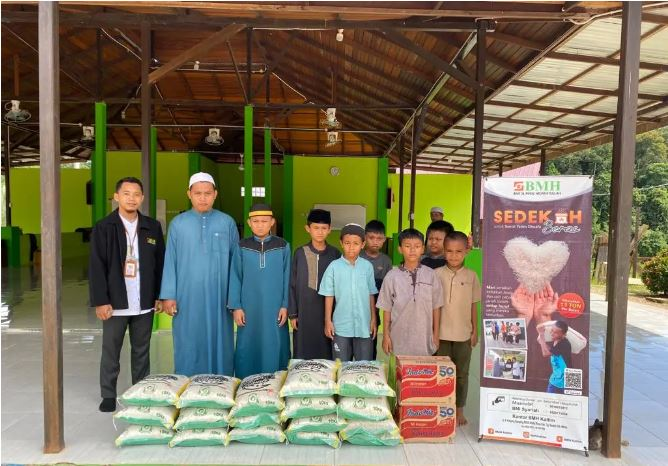
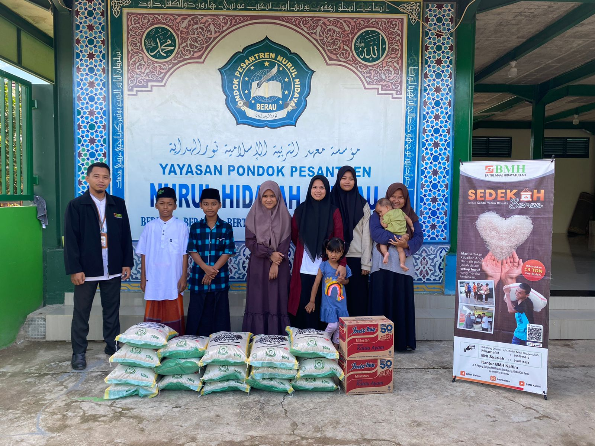

Penyaluran Beras untuk Santri
Sembako untuk Santri Tiga Pesantren di Berau

Laznas BMH Gerai Berau Kalimantan Timur kirimkan bantuan sembako untuk santri yang menimba ilmu di tiga pesantren yang ada di Berau.
Seperti di Darur Rahmah, di Jalan Rantau Panjang. Kemudian Hubbul Yatama Wal Masakin di Jalan H. Isa 3. Serta Pesantren Nurul Hidayah Jl. P. Panjang Berau.
"Alhamdulillah total bantuan yang dikirimkan hari ini mencapai 490 Kg beras yang akan dinikmati oleh 300 santri di tiga lokasi berbeda itu," terang Koordinator BMH Gerai Berau, Sabliansyah (20/6).

Bantuan ini membahagiakan santri dan pengurus pesantren. Seperti ungkap Ustaddz Sofyan.
"Terimakasih kepada donatur dan BMH. Alhamdulillah, semoga ini menjadi berkah bagi kita semua dalam melakukan kebaikan," ungkapnya sumringah.
BMH akan terus berikan dukungan terhadap setiap gerakan mencerdaskan bangsa, utamanya pendidikan para santri di Indonesia.
Kembali